Field Management
Fields define every question and input students fill in when making a submission. You can create as many fields as you need, choose from 8 field types, and arrange them in any order. Fields must be configured before students can submit.
mod/casestudy:managefields — Editing Teacher or Manager role.Accessing field management
Open the Case Study activity, then click Manage Fields in the activity navigation menu (or secondary navigation).
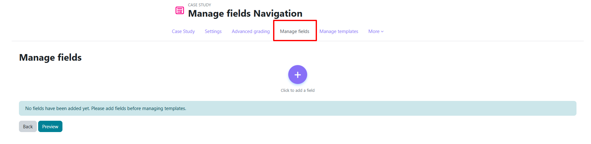
Fields management table
The table lists all configured fields in the order students will see them.
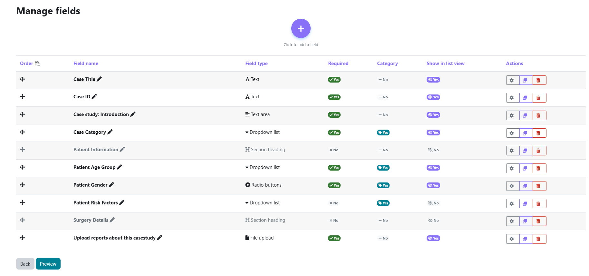
| Column | Description |
|---|---|
| ✥ (drag handle) | Drag to reorder — order is saved automatically (no Save button needed) |
| Name | Label shown to students |
| Short Name | Internal identifier used in templates (e.g., {field_shortname}) |
| Type | Field type: text, dropdown, file, etc. |
| Required | Whether the field must be filled before submitting |
| Category | Whether the field is used for completion rules |
| Actions | Edit / Clone / Delete |
Reordering fields
Drag a row by its ✥ handle to change its position. The new order is saved immediately via AJAX.
Cloning a field
Click Clone to duplicate a field with the same type and configuration. The clone gets a new unique short name automatically. Useful for repeating similar field patterns.
Deleting a field
Adding a field
Click Add field. Select a field type from the list, then configure the field on the next screen.
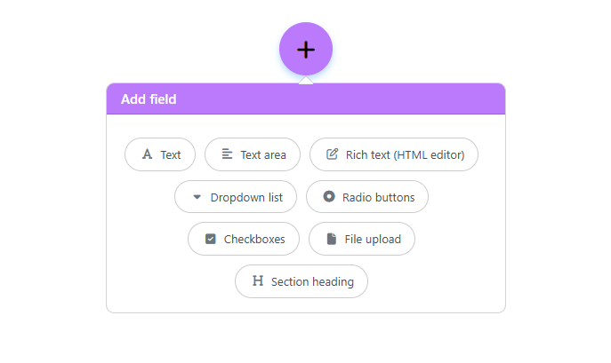
Common settings (all field types)
| Setting | Required | Description |
|---|---|---|
| Field Name | Yes | The label students see next to the input |
| Short Name | Yes | Unique identifier |
| Field Description | No | Help text shown beneath the field to clarify what students should enter |
| Required | — | If ticked, students cannot submit without filling this field |
| Category Field | — | If ticked, this field's values can be used as completion categories (see Completion Rules) |
| Show in List View | — | If ticked, this field value appears in the summaries / list table |
Field types
📝 Text — single line input
A plain text field for short answers: names, codes, titles, etc.
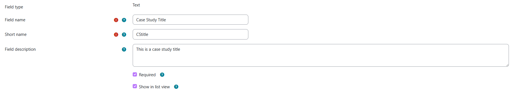
Supports: Required · Show in list view
📄 Textarea — multi-line plain text
A resizable text area for longer free-form answers.
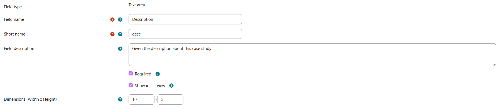
| Setting | Description |
|---|---|
| Width (columns) | Optional. Default visible width of the text area. |
| Height (rows) | Optional. Default visible height of the text area. |
Supports: Required · Show in list view
✨ Rich Text — HTML editor
A full Moodle HTML editor for formatted text, images, links, and embedded files.
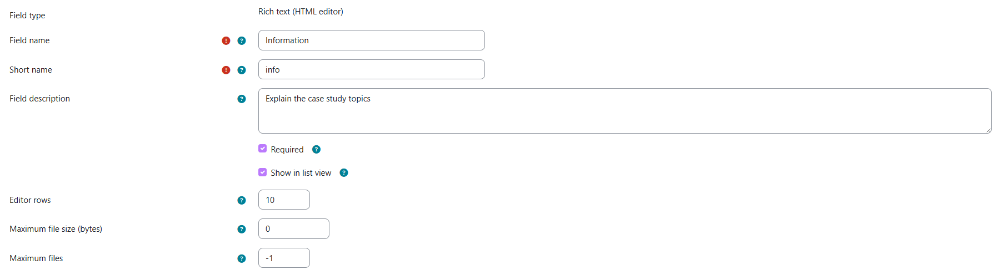
| Setting | Description |
|---|---|
| Editor Rows | Default height in rows (minimum 1, default 10) |
| Maximum File Size (bytes) | Maximum size for embedded files. 0 = use site default. |
| Maximum Files | Maximum number of files. -1 = unlimited. |
Supports: Required · Show in list view
Does not support: Category (formatted content is too complex for category matching)
🔽 Dropdown — single select list
A drop-down menu where students pick exactly one option from a list you define.
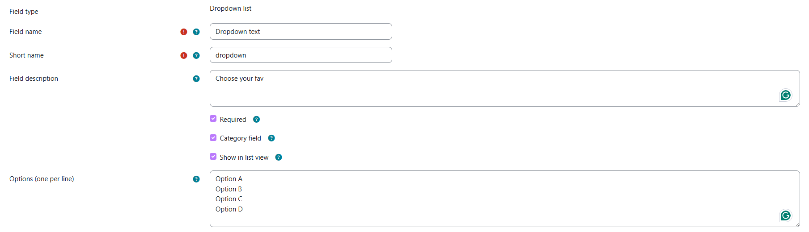
| Setting | Description |
|---|---|
| Options | One option per line — these are the choices shown to students |
Supports: Required · Category · Show in list view
🔘 Radio — radio button group
Like Dropdown but displayed as visible radio buttons. Students pick exactly one option.
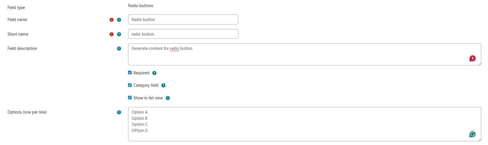
| Setting | Description |
|---|---|
| Options | One option per line |
Supports: Required · Category · Show in list view
☑️ Checkbox — multiple selections
A group of checkboxes where students can tick one or more options.
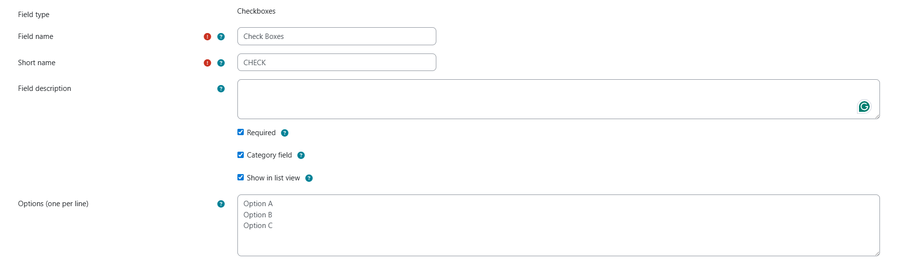
| Setting | Description |
|---|---|
| Options | One option per line |
Supports: Required · Category · Show in list view
📎 File — file upload
Allows students to upload one or more files as part of their submission.
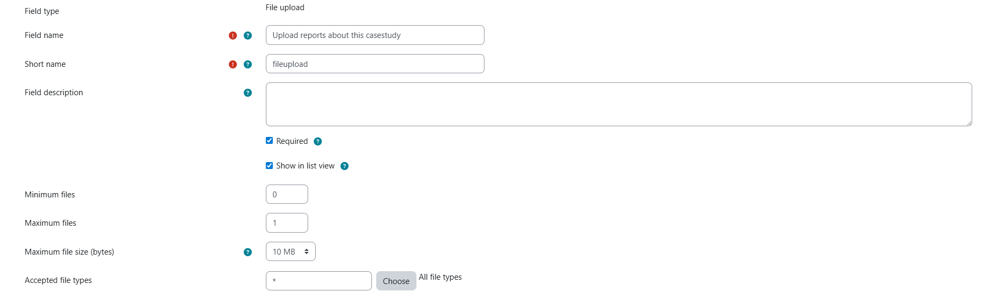
| Setting | Description |
|---|---|
| Minimum Files | Minimum required. 0 = none required (default) |
| Maximum Files | Maximum allowed. 0 = unlimited |
| Maximum File Size (bytes) | Per-file size limit. 0 = no limit |
| Accepted File Types | Comma-separated extensions or MIME types (e.g., .pdf,.docx). Leave blank to allow any type. |
Supports: Required · Show in list view
Does not support: Category
📌 Section Heading — visual divider
Displays a styled heading to divide the submission form into named sections. It collects no data from students.
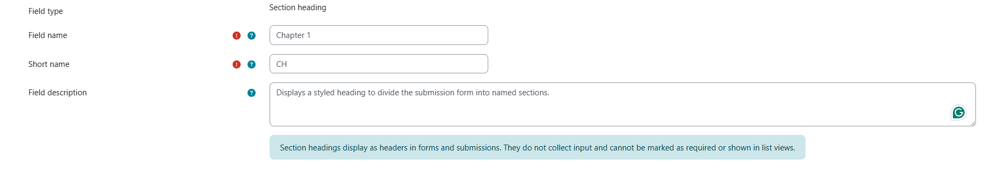
Best practices
- Use consistent, descriptive short names (e.g.,
case_type,analysis_body,references) — they are used in templates. - Mark Category only on Dropdown/Radio fields you intend to use in completion rules.
- Use Section Headings to group related fields (e.g., Background, Analysis, Conclusions).
- Show in List View for fields that help graders identify submissions at a glance (e.g., a case type or student name field).
- Set Required on fields where a blank answer would make the submission meaningless.